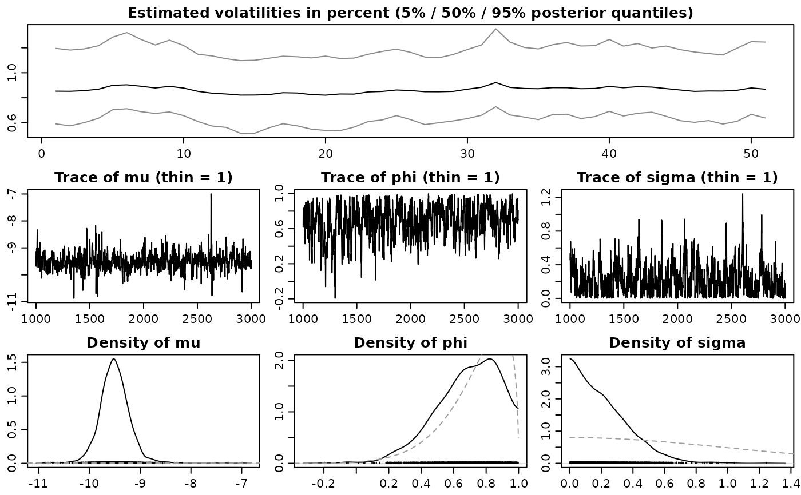
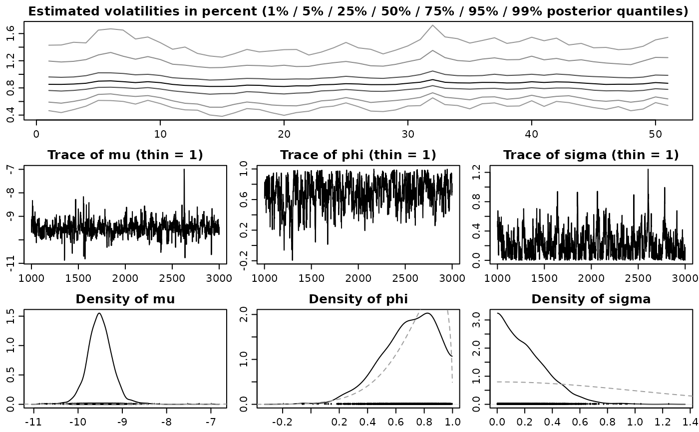

Creates or updates a summary of an svdraws object.
updatesummary(
x,
quantiles = c(0.05, 0.5, 0.95),
esspara = TRUE,
esslatent = FALSE
)svdraws object.
numeric vector of posterior quantiles to be computed. The
default is c(0.05, 0.5, 0.95).
logical value which indicates whether the effective sample
size (ESS) should be calculated for the parameter draws. This is
achieved by calling effectiveSize from the coda
package. The default is TRUE.
logical value which indicates whether the effective sample
size (ESS) should be calculated for the latent log-volatility draws.
This is achieved by calling effectiveSize from the
coda package. The default is FALSE, because this can be quite
time-consuming when many latent variables are present.
The value returned is an updated list object of class svdraws
holding
mcmc object containing the parameter draws
from the posterior distribution.
mcmc object
containing the latent instantaneous log-volatility draws from the
posterior distribution.
mcmc object containing the
latent initial log-volatility draws from the posterior distribution.
argument y.
"proc_time" object
containing the run time of the sampler.
list
containing the parameter values of the prior distribution, i.e. the
arguments priormu, priorphi, priorsigma (and
potentially nu).
list containing the thinning
parameters, i.e. the arguments thinpara, thinlatent and
keeptime.
list containing a collection of
summary statistics of the posterior draws for para, latent,
and latent0.
To display the output, use print, summary and plot. The
print method simply prints the posterior draws (which is very likely
a lot of output); the summary method displays the summary statistics
currently stored in the object; the plot method gives a graphical
overview of the posterior distribution by calling volplot,
traceplot and densplot and displaying the
results on a single page.
updatesummary will always calculate the posterior mean and the
posterior standard deviation of the raw draws and some common
transformations thereof. Moroever, the posterior quantiles, specified by the
argument quantiles, are computed. If esspara and/or
esslatent are TRUE, the corresponding effective sample size
(ESS) will also be included.
updatesummary does not actually overwrite the object's current
summary, but in fact creates a new object with an updated summary. Thus,
don't forget to overwrite the old object if this is want you intend to do.
See the examples below for more details.
## Here is a baby-example to illustrate the idea.
## Simulate an SV time series of length 51 with default parameters:
sim <- svsim(51)
## Draw from the posterior:
res <- svsample(sim$y, draws = 2000, priorphi = c(10, 1.5))
#> Done!
#> Summarizing posterior draws...
## Check out the results:
summary(res)
#>
#> Summary of 'svdraws' object
#>
#> Prior distributions:
#> mu ~ Normal(mean = 0, sd = 100)
#> (phi+1)/2 ~ Beta(a = 10, b = 1.5)
#> sigma^2 ~ Gamma(shape = 0.5, rate = 0.5)
#> nu ~ Infinity
#> rho ~ Constant(value = 0)
#>
#> Stored 2000 MCMC draws after a burn-in of 1000.
#> No thinning.
#>
#> Posterior draws of SV parameters (thinning = 1):
#> mean sd 5% 50% 95% ESS
#> mu -11.2417 1.226 -12.6786 -11.2982 -9.7786 297
#> phi 0.8392 0.121 0.6194 0.8656 0.9780 177
#> sigma 0.6636 0.244 0.3165 0.6353 1.1220 117
#> exp(mu/2) 0.0065 0.036 0.0018 0.0035 0.0075 297
#> sigma^2 0.4998 0.383 0.1002 0.4037 1.2589 117
#>
plot(res)

## Look at other quantiles and calculate ESS of latents:
newquants <- c(0.01, 0.05, 0.25, 0.5, 0.75, 0.95, 0.99)
res <- updatesummary(res, quantiles = newquants, esslatent = TRUE)
## See the difference?
summary(res)
#>
#> Summary of 'svdraws' object
#>
#> Prior distributions:
#> mu ~ Normal(mean = 0, sd = 100)
#> (phi+1)/2 ~ Beta(a = 10, b = 1.5)
#> sigma^2 ~ Gamma(shape = 0.5, rate = 0.5)
#> nu ~ Infinity
#> rho ~ Constant(value = 0)
#>
#> Stored 2000 MCMC draws after a burn-in of 1000.
#> No thinning.
#>
#> Posterior draws of SV parameters (thinning = 1):
#> mean sd 1% 5% 25% 50% 75% 95%
#> mu -11.2417 1.226 -13.732 -12.6786 -11.7638 -11.2982 -10.7854 -9.7786
#> phi 0.8392 0.121 0.460 0.6194 0.7784 0.8656 0.9321 0.9780
#> sigma 0.6636 0.244 0.205 0.3165 0.4945 0.6353 0.7980 1.1220
#> exp(mu/2) 0.0065 0.036 0.001 0.0018 0.0028 0.0035 0.0045 0.0075
#> sigma^2 0.4998 0.383 0.042 0.1002 0.2446 0.4037 0.6369 1.2589
#> 99% ESS
#> mu -8.779 297
#> phi 0.992 177
#> sigma 1.420 117
#> exp(mu/2) 0.012 297
#> sigma^2 2.018 117
#>
plot(res)
